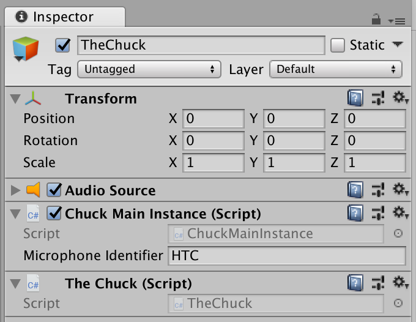

Chunity : Documentation
| |||
| |||
|
Welcome to the documentation for Chunity! Below are lists of all the available functions you might want to use in Chunity, as well as a few functions. You can also check out the tutorials.
ChuckMainInstance / ChuckSubInstanceThese components have identical APIs. In most cases, you will be sending commands to a ChuckSubInstance, which will send on those commands to whichever ChuckMainInstance it refers to, but you can also send commands directly to a ChuckMainInstance. Running CodeHere's an example of how to use a ChuckMainInstance / ChuckSubInstance, taken from the tutorials. [function]: bool RunCode ( string code );
[function]: bool RunFile ( string filename, bool fromStreamingAssets = true );
[function]: bool RunFile ( string filename, string colonSeparatedArgs, bool fromStreamingAssets = true );
Global IntsHere's how it would look to set and get a global int. See also ChuckIntSyncer below for a simpler pattern that doesn't involve writing your own callback. [function]: bool SetInt ( string variableName, long value );
[function]: bool GetInt ( string variableName, Chuck.IntCallback callback );
[function]: Chuck.IntCallback CreateGetIntCallback ( Action< long > callbackFunction );
Global FloatsSee Global Ints above for an example of how to get and set global variables. See also ChuckFloatSyncer below for a simpler pattern that doesn't involve writing your own callback. [function]: bool SetFloat ( string variableName, double value );
[function]: bool GetFloat ( string variableName, Chuck.FloatCallback callback );
[function]: Chuck.FloatCallback CreateGetFloatCallback ( Action< double > callbackFunction );
Global StringsSee Global Ints above for an example of how to get and set global variables. See also ChuckStringSyncer below for a simpler pattern that doesn't involve writing your own callback. [function]: bool SetString ( string variableName, string value );
[function]: bool GetString ( string variableName, Chuck.StringCallback callback );
[function]: Chuck.StringCallback CreateGetStringCallback ( Action< string > callbackFunction );
Global EventsHere's an example of how to trigger and listen to global Events. See also ChuckEventListener below for a simpler pattern that doesn't involve communicating back from the audio thread to the Update() thread. [function]: bool SignalEvent ( string variableName );
[function]: bool BroadcastEvent ( string variableName );
[function]: bool ListenForChuckEventOnce ( string variableName, Chuck.VoidCallback callback );
[function]: bool StartListeningForChuckEvent ( string variableName, Chuck.VoidCallback callback );
[function]: bool StopListeningForChuckEvent ( string variableName, Chuck.VoidCallback callback );
[function]: Chuck.VoidCallback CreateVoidCallback ( Action callbackFunction );
Global Int ArraysSee Global Ints above for an example of how to get and set global variables. Note that "associative array" is ChucK's version of a dictionary with string keys mapping to values (see ChucK documentation). [function]: bool SetIntArray ( string variableName, long[] values );
[function]: bool GetIntArray ( string variableName, Chuck.IntArrayCallback callback );
[function]: Chuck.IntArrayCallback CreateGetIntArrayCallback ( Action< long[], ulong > callbackFunction );
[function]: bool SetIntArrayValue ( string variableName, uint index, long value );
[function]: bool GetIntArrayValue ( string variableName, uint index, Chuck.IntCallback callback );
[function]: bool SetAssociativeIntArrayValue ( string variableName, string key, long value );
[function]: bool GetAssociativeIntArrayValue ( string variableName, string key, Chuck.IntCallback callback );
Global Float ArraysSee Global Ints above for an example of how to get and set global variables. Note that "associative array" is ChucK's version of a dictionary with string keys mapping to values (see ChucK documentation). [function]: bool SetFloatArray ( string variableName, double[] values );
[function]: bool GetFloatArray ( string variableName, Chuck.FloatArrayCallback callback );
[function]: Chuck.FloatArrayCallback CreateGetFloatArrayCallback ( Action< double[], ulong > callbackFunction );
[function]: bool SetFloatArrayValue ( string variableName, uint index, double value );
[function]: bool GetFloatArrayValue ( string variableName, uint index, Chuck.FloatCallback callback );
[function]: bool SetAssociativeFloatArrayValue ( string variableName, string key, double value );
[function]: bool GetAssociativeFloatArrayValue ( string variableName, string key, Chuck.FloatCallback callback );
Unique VariablesYou might want many copies running of a script that needs a global variable for communication between ChucK and Unity, but they all should not be referring to the same global variable. In this case, you should determine the name of each script's global variable at runtime. [function]: bool GetUniqueVariableName ( string prefix = "v" );
Specific to ChuckMainInstanceA ChuckMainInstance has one setting: the microphone used as input to its ChucK VM. [value]: string microphoneIdentifier
Specific to ChuckSubInstanceA ChuckSubInstance has two parameters for setting itself up. See the initial setup tutorial and the spatialization tutorial. [value]: ChuckMainInstance chuckMainInstance
[value]: bool spatialize
[function]: void SetRunning ( bool r );
TheChuckIf you add a TheChuck component to a game object with a ChuckMainInstance component, then you will not need to set the chuckMainInstance field of any new ChuckSubInstances you spawn; they will instead refer to the game object that has a TheChuck attached. Helper ComponentsThese components can be used by adding them to a GameObject at runtime. They are useful for dealing with global ChucK variables without having to write callbacks that are called from the audio thread. ChuckEventListenerChuckEventListener is a helper component that makes it easier to write programs like the example in Global Events. [function]: void ListenForEvent ( ChuckSubInstance chuck, string eventToListenFor, Action callback );
[function]: void StopListening ();
ChuckIntSyncerChuckIntSyncer is a helper component that makes it easier to write programs like the example in Global Ints. [function]: void SyncInt ( ChuckSubInstance chuck, string intToSync );
[function]: void StopSyncing ();
[function]: int GetCurrentValue ();
[function]: void SetNewValue ( int newValue );
ChuckFloatSyncerSee ChuckIntSyncer above for an example of how to use this component. [function]: void SyncFloat ( ChuckSubInstance chuck, string floatToSync );
[function]: void StopSyncing ();
[function]: float GetCurrentValue ();
[function]: void SetNewValue ( float newValue );
ChuckStringSyncerSee ChuckIntSyncer above for an example of how to use this component. [function]: void SyncString ( ChuckSubInstance chuck, string stringToSync );
[function]: void StopSyncing ();
[function]: string GetCurrentValue ();
[function]: void SetNewValue ( string newValue );
|